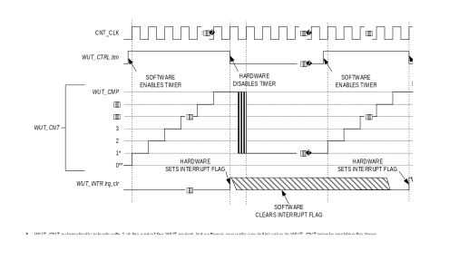
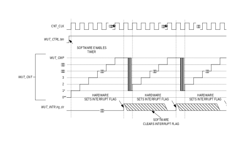

Wake-Up Timer (WUT)
The WUT is a unique instance of a 32-bit timer.
- The wake-up timer uses the is 32.768kHz RTC source.
- Programmable prescaler with values from 1 to 4096.
-
Supports three timer modes, all of which can wake the device from low-power modes:
-
One-Shot: The timer counts up to the terminal value, generates a wake-up timer event then halts.
-
Continuous: The timer counts up to the terminal value, generates a wake-up timer event then continues counting.
-
Compare: The timer counts up to the terminal value, generates a wake-up timer event, resets the count and continues counting.
-
Independent interrupt handler (WUT_IRQn).
Basic Operation
The timer modes operate by incrementing the WUT_CNT register. The WUT_CNTregister is always readable, even while the timer is enabled and counting.
Each timer mode has a user-configurable timer period, which terminates on the timer clock cycle following the end of the timer period condition. The end of a timer period always sets the corresponding interrupt flag and generates a wake-up timer interrupt (WUT_IRQn) if enabled.
The timer peripheral automatically sets WUT_CNT to 1 at the end of a timer period, but WUT_CNT is set to 0 following a system reset. This means the first timer period following a system reset is one timer clock longer than subsequent timer periods if WUT_CNT is not initialized to 1 during the timer configuration step.
The timer clock frequency, fCNT_CLK, is a divided version of the 32.768kHz RTC clock, as shown in Equation 20‑1.
Equation 20-1: Wake-Up Timer Clock Frequency
The divisor (prescaler) can be set from 1 to 4096 using the concatenated fields WUT_CTRL.pres3:WUT_CTRL.pres, as shown in Table 20‑1.
Table 20-1: MAX78000 WUT Clock Period
| WUT_CTRL.pres3 | WUT_CTRL.pres | Prescaler | fCNT_CLK(Hz) |
|---|---|---|---|
| 0 | 0b000 | 1 | 32,768 |
| 0 | 0b001 | 2 | 16,384 |
| 0 | 0b010 | 4 | 8,192 |
| 0 | 0b011 | 8 | 4,096 |
| 0 | 0b100 | 16 | 2,048 |
| 0 | 0b101 | 32 | 1,024 |
| 0 | 0b110 | 64 | 512 |
| 0 | 0b111 | 128 | 256 |
| 1 | 0b000 | 256 | 128 |
| 1 | 0b001 | 512 | 64 |
| 1 | 0b010 | 1024 | 32 |
| 1 | 0b011 | 2048 | 16 |
| 1 | 0b100 | 4096 | 8 |
| 1 | 0b101 | Reserved | Reserved |
| 1 | 0b110 | Reserved | Reserved |
| 1 | 0b111 | Reserved | Reserved |
One-Shot Mode (0)
In one-shot mode, the timer peripheral increments the WUT_CNT register until it matches the WUT_CMP register and then stops incrementing and disables the timer. In this mode, the timer must be re-enabled to start another one-shot mode event.
Figure 20-1: One-Shot Mode Diagram

One-Shot Mode Timer Period
The timer period ends on the timer clock when WUT_CNT = WUT_CMP.
The timer peripheral automatically performs the following actions at the end of the timer period:
- WUT_CNT is reset to 1.
- The timer is disabled by setting WUT_CTRL.ten = 0.
- The timer interrupt bit WUT_INTR.irq_clr is set and wakes up the device if the wake-up timer is enabled as a wake-up event, generating an interrupt.
One-Shot Mode Configuration
Configure the timer for one-shot mode by performing the following steps:
- Set WUT_CTRL.ten = 0 to disable the timer.
- Set WUT_CTRL.tmode to 0 to select one-shot mode.
- Set WUT_CTRL.pres3:WUT_CTRL.pres to determine the timer period.
-
Enable the wake-up timer as a wake-up source by setting GCR_PM.wut_we to 1.
a. If desired, register a wake-up interrupt handler (WUT_IRQn).
-
Write an initial value to the WUT_CNT register, if desired. This effects only the first period; subsequent timer periods always reset the WUT_CNT register to 1.
- Write the compare value to the WUT_CMP register.
- Clear the wake-up timer interrupt flag by writing 0 to WUT_INTR.irq_clr.
- Set WUT_CTRL.ten to 1 to enable the timer.
- Enter a low-power sleep mode. See Low-Power Modes for details.
The timer period is calculated using the following equation:
Equation 20-2: One-Shot Mode Timer Period
Continuous Mode (1)
In continuous mode, the wake-up timer increments WUT_CNT until it matches WUT_CMP, and hardware resets WUT_CNT to 1 and continues incrementing.
Figure 20-2: Continuous Mode Diagram

Continuous Mode Timer Period
The wake-up timer period ends on the timer clock following WUT_CNT = WUT_CMP.
The wake-up timer peripheral automatically performs the following actions at the end of the timer period:
- WUT_CNT is reset to 1. The wake-up timer remains enabled and continues incrementing.
- The timer interrupt bit WUT_INTR.irq_clr is set. An interrupt is generated if enabled.
Continuous Mode Configuration
Configure the timer for continuous mode by performing the steps following:
- Set WUT_CTRL.ten = 0 to disable the timer.
- Set WUT_CTRL.tmode to 1 to select continuous mode.
- Set WUT_CTRL.pres3:WUT_CTRL.pres to determine the timer period.
-
Enable the wake-up timer as a wake-up source by setting GCR_PM.wut_we to 1.
a. If desired, register a wake-up interrupt handler (WUT_IRQn).
-
Write an initial value to the WUT_CNT register, if desired. The initial value is only used for the first period; subsequent timer periods always reset the WUT_CNT register to 1.
- Write the compare value to the WUT_CMP register.
- Clear the wake-up timer interrupt flag by writing 0 to WUT_INTR.irq_clr.
- Set WUT_CTRL.ten to 1 to enable the timer.
- Enter a low-power sleep mode. See Low-Power Modes for details.
The Continuous Mode Timer Period is calculated using Equation 20‑3.
Equation 20-3: Continuous Mode Timer Period
Compare Mode (5)
In compare mode, the timer peripheral increments continually from 0x0000 0000 (after the first timer period) to the maximum value, then rolls over to 0x0000 0000 and continues incrementing. The end of timer period event occurs when the timer value matches the compare value, but the timer continues to increment until the count reaches 0xFFFF FFFF. The timer counter then rolls over and continues counting from 0x0000 0000.
The timer period ends on the timer clock following WUT_CNT = WUT_CNT.
The timer peripheral automatically performs the following actions when a timer period event ends:
- WUT_CNT is reset to 0x0000 00000.
- The WUT_INTR.irq_clr field is set to 1 to indicate a timer interrupt event occurred.
- The timer remains enabled and continues incrementing.
The initial compare mode timer period is calculated using Equation 20‑4. Subsequent compare mode timer periods are always 0xFFFF FFFF.
Equation 20‑4: Compare Mode Timer Initial Period
Figure 20-3: Compare Mode Diagram
Configure the timer for compare mode by doing the following:
- Set WUT_CTRL.ten = 0 to disable the timer.
- Set WUT_CTRL.tmode to 1 to select continuous mode.
- Set WUT_CTRL.pres3:WUT_CTRL.pres to determine the timer period.
-
Enable the wake-up timer as a wake-up source by setting GCR_PM.wut_we to 1.
a. If desired, register a wake-up interrupt handler (WUT_IRQn).
-
Write the compare value to the WUT_CMP register.
- If desired, write an initial value to WUT_CNT register.
- Clear the wake-up timer interrupt flag by writing 0 to WUT_INTR.irq_clr.
- Set WUT_CTRL.ten to 1 to enable the timer.
- Enter a low-power sleep mode. See Low-Power Modes for details.
Registers
See Table 3-3 for the base address of this peripheral/module. See Table 1-1 for an explanation of the read and write access of each field. Unless specified otherwise, all fields are reset on a system reset, soft reset, POR, and the peripheral-specific resets.
| Offset | Register Name | Description |
|---|---|---|
| [0x0000] | WUT_CNT | Wake-Up Timer Counter Register |
| [0x0004] | WUT_CMP | Wake-Up Timer Compare Register |
| [0x0008] | WUT_PWM | Wake-Up Timer PWM Register |
| [0x000C] | WUT_INTR | Wake-Up Timer Interrupt Register |
| [0x0010] | WUT_CTRL | Wake-Up Timer Control Register |
| [0x0014] | WUT_NOLCMP | Wake-Up Timer Non-Overlapping Compare Register |
Register Details
Table 20-3: Wake-Up Timer Count Register
| Wake-Up Timer Count | WUT_CNT | [0x0000] | ||
|---|---|---|---|---|
| Bits | Name | Access | Reset | Description |
| 31:0 | count | R/W | 0 | Timer Count Value The current count value for the timer. This field increments as the timer counts. Reads of this register are always valid. Before writing this field, disable the timer by clearing the bit WUT_CTRL.ten. |
Table 20-4: Wake-Up Timer Compare Register
| Wake-Up Timer Compare | WUT_CMP | [0x0004] | ||
|---|---|---|---|---|
| Bits | Name | Access | Reset | Description |
| 31:0 | compare | R/W | 0 | Timer Compare Value The value in this register is used as the compare value for the timer’s count value. The specific mode of the timer determines the compare field meaning. See the timer mode’s detailed configuration section for the usage of this field and its meaning. |
Table 20-5: Wake-Up Timer PWM Register
| Wake-Up Timer PWM | WUT_PWM | [0x0008] | ||
|---|---|---|---|---|
| Bits | Name | Access | Reset | Description |
| 31:0 | - | RO | 0 | Reserved |
Table 20-6: Wake-Up Timer Interrupt Register
| Wake-Up Timer Interrupt | WUT_INTR | [0x000C] | ||
|---|---|---|---|---|
| Bits | Name | Access | Reset | Description |
| 31:1 | - | RO | 0 | Reserved |
| 0 | irq_clr | R/W | 0 | Timer Interrupt Flag If set, this field indicates a wake-up timer interrupt condition occurred. Writing any value to this bit clears the wake-up timer’s interrupt.
0: Wake-up timer interrupt is not active.
1: Wake-up timer interrupt occurred. |
Table 20-7: Wake-Up Timer Control Register
| Wake-Up Timer Control | WUT_CTRL | [0x0010] | ||||||||
|---|---|---|---|---|---|---|---|---|---|---|
| Bits | Name | Access | Reset | Description | ||||||
| 31:9 | - | DNM | 0 | Reserved, Do Not Modify | ||||||
| 8 | pres3 | R/W | 0 | Timer Prescaler Select MSB See WUT_CTRL.pres for details on this field’s usage. |
||||||
| 7 | ten | R/W | 0 | Timer Enable
0: Disabled 1: Enabled |
||||||
| 6 | tpol | DNM | 0 | Reserved, Do Not Modify | ||||||
| 5:3 | pres | R/W | 0 | Timer Prescaler Select This field sets the timer’s prescaler value. The prescaler divides the RTC ‘s 32.768KHz input clock. Sets the timer’s count clock as shown in Equation 20‑1. The wake-up timer’s prescaler setting is a 4-bit value with pres3 as the most significant bit and pres as the three least significant bits. See Table 20‑1 for details. |
||||||
| 2:0 | tmode | R/W | 0 | Timer Mode Select This field sets the timer’s operating mode.
|
||||||
Table 20-8: Wake-Up Timer Non-Overlapping Compare Register
| Wake-Up Timer Non-Overlapping Compare | WUT_NOLCMP | [0x0014] | ||
|---|---|---|---|---|
| Bits | Name | Access | Reset | Description |
| 31:0 | - | DNM | 0 | Reserved, Do Not Modify |